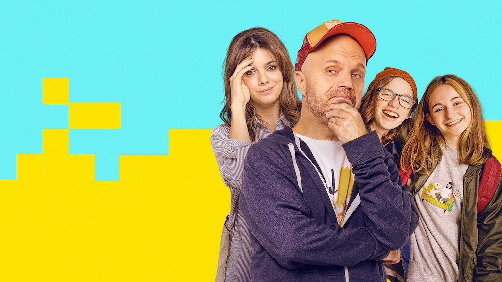
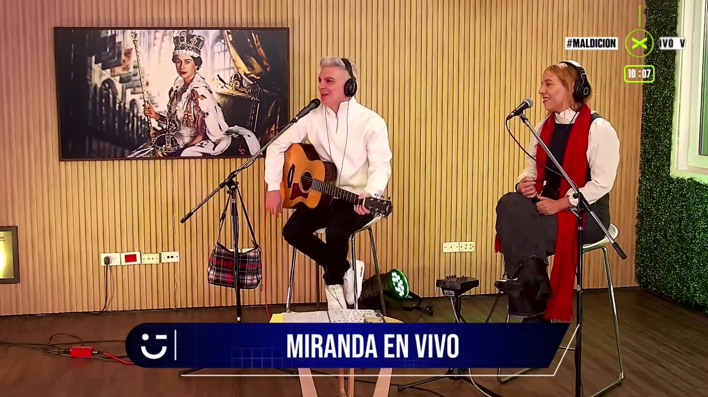
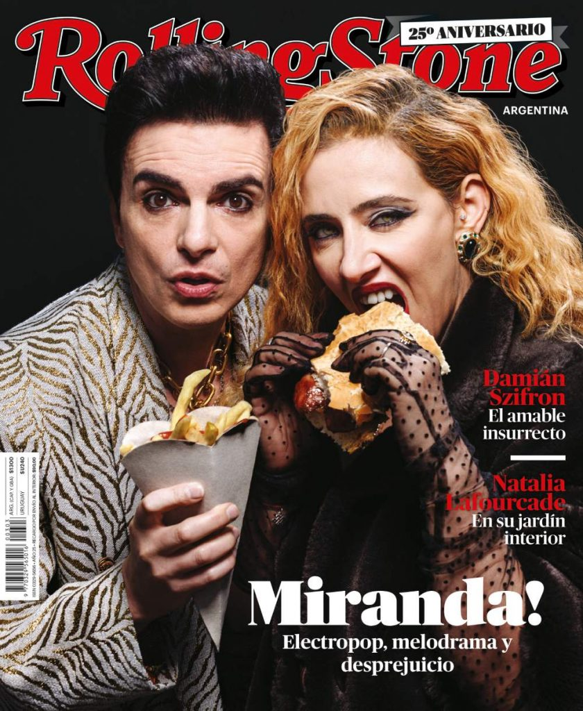
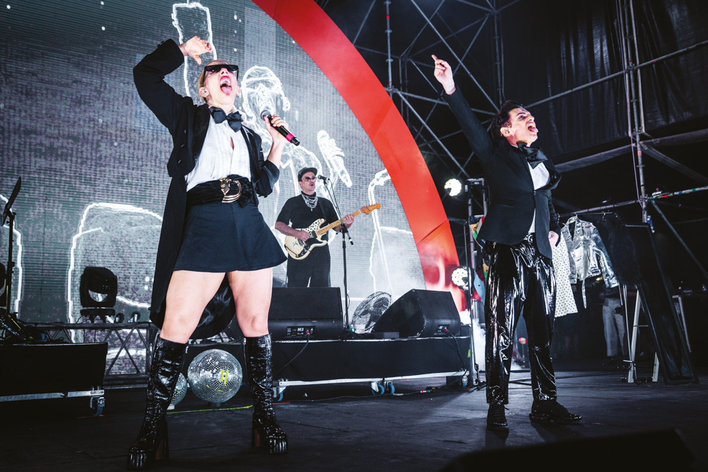

Noticias
Miranda! compuso la banda sonora de la serie protagonizada por Sebastián Wainraich, que está entre los cinco contenidos más vistos de la plataforma. La dupla conversó con Infobae sobre la canción, la "crisis de los 40″ y sus deseos al salir de la cuarentena. Después de la canción original para la tira “Quiero vivir a tu lado” (El Trece, 2017), aportar temas de apertura (“Enamorada”) y cierre (“Hola”) a “Lalola” (América, 2007) y la cortina del Fútbol para Todos (basada en el tema “Ritmo y decepción”, para la temporada 2012), Miranda! revalidó una vez más su título de “banda más televisiva del rock y el pop argentino”.
Leé la nota completa Aquí
Mario Pergolini recibe en su programa a Juliana Gattas y Ale Sergi, integrantes de la icónica banda Miranda!, en una charla divertida e informal. Durante la entrevista, los músicos comparten anécdotas sobre su carrera, sus experiencias en el escenario y el proceso de trabajar juntos en la industria musical. Además, hablan sobre otros artistas y comentan sobre la conexión con sus fans y los retos de la fama.
Mira la entrevista completa Aquí
El artículo de Rolling Stone sobre Miranda! explora los orígenes de la icónica banda argentina, revelando detalles de sus inicios y cómo se convirtieron en pioneros del pop latino. Con anécdotas sobre sus primeras experiencias y el impacto de su estilo único, es un vistazo imperdible para los fans interesados en conocer el recorrido que llevó al dúo al estrellato. ¡Descubre más sobre cómo Miranda! forjó su identidad musical y el camino que los llevó a redefinir el pop!
Lee el artículo completo Aquí
En la próxima edición de Quilmes Rock en abril de 2025, el festival de rock más grande de Argentina, Miranda! será uno de los protagonistas del primer día. Los fans de la icónica banda podrán disfrutar de sus éxitos en vivo, en un evento que promete reunir a miles de personas y grandes artistas nacionales e internacionales. Esta presentación marca el regreso de Miranda! al festival, donde compartirán escenario con lo mejor del rock y el pop, celebrando la vigencia y popularidad de su música en el país.
Mira las fechas y compra tus entradas para el festival Aquí
